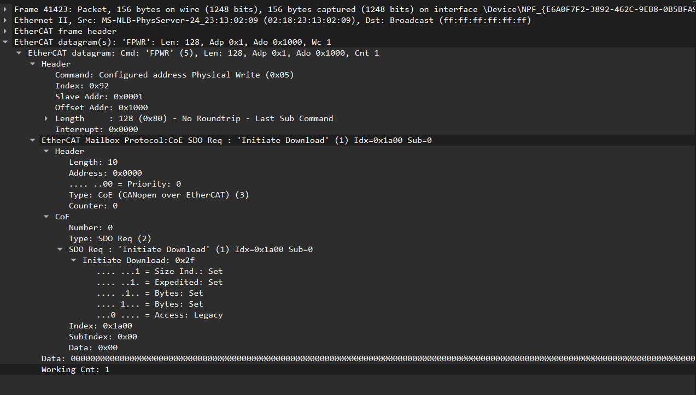
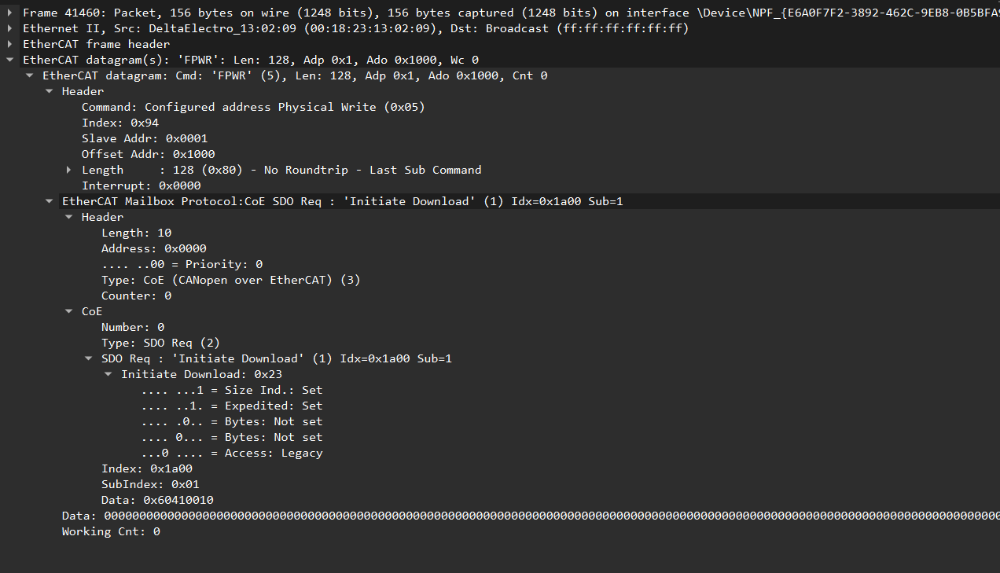
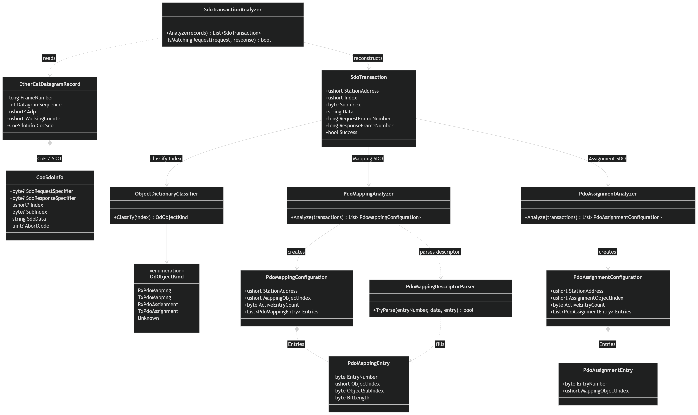

08/xx – 08/xx
理解封包與 EtherCAT
100%- 使用 Wireshark 觀察從上電抓的原始 EtherCAT 封包
- 整理 Broadcast、AP、FP 等指令對 Slave 的操作方式
- 整理 Master 對 Slave ESC 暫存器的讀寫流程
- 理解 CoE、SDO、PDO 與 Object Dictionary 的關係
- 建立本月主線：CoE / SDO → PDO Mapping / Assignment → SyncManager → FMMU
EtherCAT Analyzer
08/xx – 08/xx
08/xx – 08/xx
08/xx – 08/xx
08/xx – 08/xx
SECTION / 01
追蹤啟動封包，建立 ESC 暫存器存取與解析脈絡
BRD / BWR / BRWAPRD / APWR / APRWAPWR / 0x0010FPRD / FPWR / FPRW上電後，Master 先透過 Broadcast Command 對所有 Slave 執行共通操作，再利用 Auto Increment Addressing 依鏈路位置逐站存取 Slave。完成 Configured Station Address 配置後，Master 即可使用 Fixed Position Command，透過固定站址指定 Slave，再利用 ADO 存取該 Slave 的 ESC Register。
BRD / BWR / BRWAll Slaves| Command | Target | Operation |
|---|---|---|
BRD | All Slaves | Read the same ESC register from all slaves |
BWR | All Slaves | Write the same ESC register to all slaves |
BRW | All Slaves | Read / Write the same ESC register across all slaves |
上電初期可觀察到 Master 使用 Broadcast Command 對所有 Slave 進行共通的 ESC Register 操作。此階段尚未依拓樸位置或固定站址指定單一 Slave，而是以整個 EtherCAT segment 為操作對象。
Outgoing ADP: 0x0000Signed: 0Topology Position: 1Outgoing ADP: 0xFFFFSigned: -1Topology Position: 2Outgoing ADP: 0xFFFESigned: -2Topology Position: 3| Outgoing ADP | Signed Value | 命中的拓樸位置 |
|---|---|---|
0x0000 | 0 | Slave 1 |
0xFFFF | -1 | Slave 2 |
0xFFFE | -2 | Slave 3 |
Master 以 outgoing ADP = 0、-1、-2… 逐站指定 Slave。
ADO 是目標 ESC Register Offset，命中的 Slave 會執行該 Datagram。
| Field | Value / Meaning |
|---|---|
| Command | APWR |
| ADP | Auto Increment Address，用於命中目前 Slave |
| ADO | 0x0010 |
| Register | Configured Station Address |
| Data | Master 要配置給該 Slave 的固定站址 |
Master 先利用 Auto Increment Addressing 命中指定拓樸位置的 Slave，再以 APWR 寫入 ADO 0x0010，將新的 Configured Station Address 配置到該 Slave。完成後，後續封包即可使用這個固定站址進行 Fixed Position Access。
FPRD / FPWR / FPRW| Address | Register | Meaning |
|---|---|---|
0x0120 | AL Control | Master 要求 Slave 切換 EtherCAT state |
0x0130 | AL Status | Slave 回報目前 EtherCAT state |
取得 Configured Station Address 後，Master 可使用 Fixed Position Command 直接指定特定 Slave。此時 ADP 表示 Configured Station Address，ADO 則表示該 Slave ESC 內要讀寫的 Register Offset，因此同一套 FPRD / FPWR / FPRW 操作可以用來存取指定 Slave 的不同 ESC Register。
0x0502~0x05030x0504~0x05070x0008 = Vendor ID，0x000A = Product Code 起始 Word0x0502~0x0503 的 Control / Status 欄位送出 Read CommandADO = 0x0508| Address Space | Address | Meaning |
|---|---|---|
| ESC Register | 0x0502~0x0503 | EEPROM Control / Status |
| ESC Register | 0x0504~0x0507 | EEPROM Address |
| ESC Register | 0x0508~0x050F | EEPROM Data |
| SII EEPROM Word | 0x0008~0x0009 | Vendor ID |
| SII EEPROM Word | 0x000A~0x000B | Product Code |
實際 Capture 中，Master 會以一個 APWR Datagram，從 ADO = 0x0502 開始一次寫入 6 Bytes。前 2 Bytes 對應 0x0502~0x0503 的 EEPROM Control / Status，後 4 Bytes 對應 0x0504~0x0507 的 EEPROM Address，因此一次 APWR 即可同時送出 Read Command 與欲讀取的 SII Word Address。
EEPROM Read 完成後，Master 再以 APRD 讀取 ADO = 0x0508 的 EEPROM Data。實際取得的資料內容，則由前面寫入的 SII Word Address 決定，例如 0x0008 對應 Vendor ID、0x000A 對應 Product Code。
AP Command 使用 ADP 作為 Auto Increment Address，依實體鏈路位置指定 Slave；ADO 則表示該 Slave 內要操作的 ESC Register Offset。
Master outgoing Datagram 中可觀察到 0x0000、0xFFFF、0xFFFE 等 ADP，分別對應 signed 0、-1、-2，因此可重建第 1、2、3 個 Slave 的拓樸位置。
0x0000 → Slave 1
0xFFFF → Slave 2
0xFFFE → Slave 3
Master 透過 APWR 命中指定拓樸位置後，以 ADO = 0x0010 寫入 Configured Station Address，因此 Analyzer 可以將固定站址綁定到對應的 Slave。
Master 透過 ESC EEPROM Interface 讀取 SII EEPROM，Analyzer 再將取得的 Vendor ID 與 Product Code 補入同一個 Slave record。
先從 Datagram Record 中篩選 APRD、APWR、APRW、ARMW 等 Auto Increment Command，再將 Master 發送與返回的 Datagram 配對成 AutoIncrementDatagramPair，作為後續 Slave 分析的基礎。
IsAutoIncrementCommand()·BuildPairs()從成功命中的 AP pair 建立 Slave candidate，利用 outgoing ADP 計算拓樸位置。0x0000 對應 Position 1，0xFFFF 對應 Position 2，依此建立 Slave 在實體鏈路中的位置。
BuildSlaveCandidates()·CalculateTopologyPosition()Analyzer 尋找 APWR 對 ADO = 0x0010 的成功寫入，解析 Master 寫入的 Register Data，並將 Configured Station Address 綁定到對應拓樸位置的 Slave。
BindConfiguredStationAddress()·ADO = 0x0010Analyzer 根據 EEPROM Read 流程，將讀取到的 SII Vendor ID 與 Product Code 綁定到同一個 Slave，完成 Slave topology、address 與 identity 的重建。
BindEepromIdentity()·Vendor ID·Product Code10x00000x00010x000001DD0x10400160Stage 3 已可由 Capture 重建 Slave 的 Topology Position、Initial ADP、Configured Address，以及 Vendor ID / Product Code。
CoE / SDO 的作用是透過 EtherCAT Mailbox 存取 CANopen Object Dictionary，並可進一步用來設定 PDO Mapping / Assignment。
EtherCAT Mailbox 是 EtherCAT 中用來傳遞非週期性資料的通訊機制。Master 與 Slave 透過 ESC 中配置的 Mailbox Buffer 交換 Mailbox Message，常用於參數設定、診斷與通訊協定服務，而不是週期性的 Process Data 傳輸。
CoE（CANopen over EtherCAT）是 EtherCAT Mailbox Protocol 之一，讓 EtherCAT 裝置可以使用 CANopen 的 Object Dictionary 與相關服務。Mailbox Header 中的 Type = 3 表示該 Mailbox Message 承載的是 CoE Protocol。
SDO（Service Data Object）是 CoE 中用來存取 Object Dictionary 的服務，採用 Request / Response 的方式運作。Master 通常作為 SDO Client，Slave 作為 SDO Server；Master 可以透過 SDO 讀取或寫入指定的 Object Dictionary Index / SubIndex。
Master 先透過 EtherCAT Datagram 存取 Slave 的 Mailbox Buffer，Mailbox Message 再指出其承載的是 CoE，而 CoE 內的 SDO Request / Response 最後對 Object Dictionary 進行讀寫。因此 EtherCAT Command、Mailbox、CoE 與 SDO 是不同協定層級，不應混為同一種 Address 或 Command。


OD Index = 0x1A00| Entry | Object | Length |
|---|---|---|
| 00 | Valid Mapping Entries | 5 |
| 01 | 0x6041:00 | 16 bits |
| 02 | 0x6043:00 | 16 bits |
| 03 | 0x3022:11 | 16 bits |
| 04 | 0x3021:0C | 16 bits |
| 05 | 0x3021:02 | 16 bits |
Entry 00 本身不是 Process Data Object，而是表示目前有效的 Mapping Entry 數量。
SubIndex 00 決定目前啟用多少個 Mapping Entry；因此當 0x1A00:00 最終設定為 5 時，Entry 01～05 都屬於有效的 TxPDO Mapping。
每個 Mapping Entry 都以 32-bit value 描述 Object Index、SubIndex 與 Bit Length。例如 0x1A00:01 = 0x60410010，因此可解析成 0x6041:00 / 16 bits。
TxPDO1 Total Length = 80 bits = 10 Bytes
SDO Client
SDO Server
Master → Slave
寫入 Object Dictionary
Slave → Master
讀取 Object Dictionary
ExpeditedSegmentedBlock目前 Analyzer 實作重點：Initiate Download Request / Response
SDO 採 Client / Server Request-Response 模型。Download 表示 Client 將資料寫入 Server 的 Object Dictionary；Upload 則表示 Client 從 Server 的 Object Dictionary 讀取資料。
0x1A00:01=0x60410010
0x60410x000x10 = 16 bits0x1A00:01→0x6041:00 / 16 bits
PDO Mapping Entry 使用 32-bit value 描述實際映射的 Object Index、SubIndex 與資料長度。
0x1A00 是 Object Dictionary Index，不是 EtherCAT ADO。
| OD Index | Type | Meaning |
|---|---|---|
0x1600~0x17FF | RxPDO Mapping | Master → Slave Process Data Mapping |
0x1A00~0x1BFF | TxPDO Mapping | Slave → Master Process Data Mapping |
| OD Index | Type | Current Mapping |
|---|---|---|
0x1C12 | RxPDO Assignment | 0x1600 |
0x1C13 | TxPDO Assignment | 0x1A00 |
PDO Mapping 決定一個 PDO 裡有哪些 Object；PDO Assignment 則決定目前實際啟用哪些 PDO Mapping。SDO 透過 Object Dictionary 完成這些組態設定。
RxPDO Assignment 0x1C12 → 0x1600TxPDO Assignment 0x1C13 → 0x1A00

拖曳查看 · 滾輪縮放 · 雙擊重設Class Diagram / Architecture Diagram / Data Path Figure